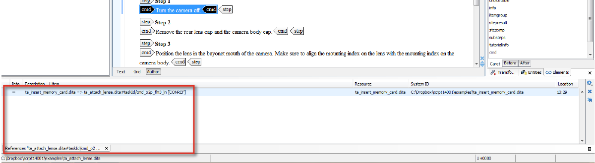

When you update an element that is conreffed in other topics, it is important to know whether the update will make sense in its new context. For that reason, it is important you can find all the topics in which the conref is used.
Open the !warehouse.dita file in your Editor area.
Right-click the element you want to know more about and choose Search References.
The window References [name of your conref library file] opens at the bottom of your Editor window and lists all topics in which the element is referenced.

Double-click an item to open up the topic in your editor window.